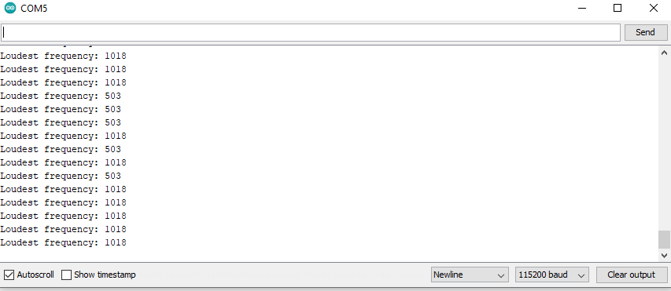

Labs
1: Introduction to Artemis
2: Bluetooth Communication

3: Characterizing the Car
4: Open-Loop Control
5: Obstacle Avoidance

6: IMU and Odometry

Robert Whitney
Welcome to my Fast Robots page! I'm a Master of Engineering student in the Cornell University Graduate School. I've always been fascinated by robots, airplanes, rocketships, drones, anything that moves fast! Unsurprisingly, I'm thrilled to be taking this class where I will develop an autonomous RC car for localization, mapping, path planning, and some cool stunts too.
The purpose of this lab is to setup and become familiar with the Arduino IDE and the Artemis board. After this lab, I will be able to program my board, blink the LED, read/write serial messages over USB, display the output from the onboard temperature sensor, measure the loudest frequency recorded by the Pulse Density Microphone, and run the board using a battery instead of my computer.
The first part of lab 1 was simple because I already have the Arduino IDE installed on my computer and am familiar with how these devices work. I uploaded the “Blink” sketch from the examples folder to ensure that sketches could be uploaded to the Artemis. From previous experience, I know that it is successful when the RX and TX lights on the Artemis blink rapidly while the sketch is uploading. To double check that the code was working properly, I changed the timing of the blinking, uploaded the new sketch, and observed the light blinking faster as expected.
The “Serial” example worked as expected, parsing inputs to the Artemis and using those inputs to display messages on the Serial Monitor. I had to change the baud rate to view them properly.
The “analogRead” example worked as well, although the functionality of the sketch was not fully realized. The temperature sensor reported gradually higher temperatures as I held my thumb to the board. However, the pin being read as an analog input was floating as it was not grounded or connected to an input, as expected.
The “microphoneOutput” example sketch also worked as described, returning the frequency of the loudest sound. When whistling loudly, I could change the output on the serial monitor by changing the pitch of my whistling in a range from 100 to 2500.
To test the battery, I inserted an “if” statement to turn on the onboard LED (pin 19) if the loudest frequency was above 2000 and turn it off otherwise. I also had to set pin 19 as an output in the setup function. This modification to the sketch worked as expected. I could whistle a low tune while watching the serial monitor, slowly raise the output above 2000, and watch the LED turn on.
I also unplugged the Artemis from the USB cable and plugged in the battery. The power LED turned on, indicating the sketch was probably running. I tested the sketch with whistling again, this time with no serial monitor to check the frequency. Again, the LED turned on when I whistled a high enough frequency and turned off when it was below the threshold.
The Artemis board and a computer are capable of low-latency, moderate-throughput wireless communication via Bluetooth LE. In this lab, you will expand a basic application for wireless communication over a Generic Attribute (GATT) framework on top of robust BLE stacks.
After getting a reliable bluetooth connection, the round-trip latency of the link was tested. After changing a few lines in main.py and running it, the VM terminal output the response time for sending messages to the Artemis board over bluetooth.
The latency of the wireless messages was most commonly between 180 and 210 ms, although some bytes were sent and received in as little as 160 ms and as much as 250 ms.
To test the latency of a wired serial connection, a short script was written in Arduino and another in Matlab. The Arduino script waits to receive a 'ping' char over a serial port set at 115200 baud/s before sending a 'pong' char in response.
while (Serial.available()) { //wait for ping
if (Serial.read() == 'p') Serial.println('r'); //send response
}
The Matlab script logs the time between sending the initial 'ping' and finishing parsing the response from the Artemis.
write(s,'p','char'); %send char
tic %start timer
msg = readline(s); %wait for response and read it
tResponse(i) = toc; %stop timer and save
The latency of a wired serial connection over 1000 trials was significantly lower compared to that of the Bluetooth connection. The round-trip latency for sending a single char and then parsing the response averaged 4ms, though it must be noted that only one char was sent at a time.
To check how many bytes are in the data packet, Serial.println(l_Rcvd); was added in the Arduino script after the other print statements. l_Rcvd is the total length of the packet we are sending in bytes. It continuously printed 99, indicating the ping-pong message was sending a full packet back and forth every time.
Next, I used the same data structure to request a float with the VM and send a response with the Artemis. For the VM, I simply uncommented await theRobot.sendCommand(Commands.REQ_FLOAT). For the Arduino script, I had to insert a float (I chose pi to 7 significant digits) into res_cmd->data as well as specify res_cmd->command_type and the total number of bytes in the packet (1 command byte + 1 length byte + 4 float bytes = 6 total bytes).
After running both of these programs, the VM terminal output "3.141592502593994" instead of the float that I sent which was "3.141596". They are as close as they can be for 4 byte floats without being equal.
Last, the data rate was tested by sending 32 and 64 bit integers to the VM. The data structure was packed with either a uint32 or a uint64 then sent off while keeping track of the time in between.
In the VM program, I only had to uncomment await theRobot.testByteStream(25).

The Artemis sent packets averaging about every 10.7ms regardless of if they were uint32 or uint64.
After completing this lab, I see the role that this bluetooth capability will play as the project progresses. The latency and data rate of the connection is far too slow for a fast robot to react dynamically using the VM for the majority of its calculations. For example, I expect that for the inverted pendulum lab to work, the Artemis will have to sense, compute, and actuate 20-100 times per second to achieve closed-loop stability, an update frequency too fast to be doing much computation over bluetooth. Thus, the Artemis and the VM must work together and compensate for eachothers weaknesses to solve whatever task is issued.
Before we start taking the car apart, we can leverage the remote control to familiarize ourselves with the capabilities of the hardware. In later labs we will seek to replicate manual behavior with autonomous control and in some cases exceed what manual control can make it do for planar navigation and more dynamic (‘flippy’) behaviors. This is a fairly open ended lab, but the goal is to methodically document the car in any way that might be useful later on.
There are important physical charactersitcs of the car that will be essential for any model of that we intend to implement in future labs. A more complete model accelerates iterative testing and will simplify future labs.
I started with determining the relevant dimensions with electronic calipers. First, I removed the plastic top as I expected it would get in the way of future labs. The wheelbase (front to rear tires) is W = 80mm and the track (left to right tires) is T = 105mm. The diameter of each tire is D = 77mm, although this may change with loading as the wheels are deformable.
The front and rear axles are equally far (40mm) from the geometric center of the body of the car whose length, width, and height are 119mm, 65mm, and 45mm respectively.
The battery life lasts about 20 minutes of continuous use involving accelerating, braking, spinning in place, doing tricks, and just moving around in general. I consider the battery "fully exhausted" when the robot can no motors can no longer overcome the rolling resistance on carpet to move. Each battery averages 4 hours to charge from dead (4.8V) to fully charged (5.6V).
The performance of the car is dependent on the surface it is driving on, the driving mode (fast or slow mode), and the battery. On tile and hardwood, the car has no problem accelerating, turning in place, and doing tricks, even on low battery. However, the car struggles to overcome friction when on carpet. Even on a full battery, turning in place is not possible so a K-turn maneuver is required to change the heading.
The car can do a few cool stunts when it has enough battery. By accelerating or decelerating very suddenly, I can flip the car over itself. I am unable to balance it on two wheels, but I can get it to flip and stay up for an instant. Additionally, I can somewhat reliably get the car to stop inches infront of a wall starting from full speed.
Here is a video of the car doing several very fast flips at full throttle.
And here is a video of me trying to hit 4 targets as quickly as I can and return to the startpoint.
I performed several tests to get a rough estimate of the speed, acceleration, and braking distance. All tests were performed with a full battery on the tiled floor where I expect to be running the robot for the remaining labs. A slow motion camera recorded a stopwatch and several trials of the robot driving across the 12" x 12" tiles. Speed was tested by getting the car up to speed and recording the time for the car to cross 4 tiles (4 feet). The average speed while in fast and slow mode over 5 trials was 8.85 ft/s (2.69 m/s) and 6.50 ft/s (1.98 m/s) respectively. Acceleration was tested by recording the time it takes for the car to cross 1 tile, starting from rest and assuming constant acceleration equal to a = 2d/t^2 where d is the distance traveled in time t. The average acceleration while in fast and slow mode over 5 trials was 20.0 ft/s^2 (6.10 m/s^2) and 6.49 ft/s^2 (1.98 m/s^2) respectively. I have included a video showing how I did the acceleration testing below. I was surprised at the level of repeatability of these tests, although I would expect very different numbers if I used a battery closer to empty.
I performed another 2 tests for braking. First, I let the car get up to speed in fast mode, then switched to slow mode upon reversing the throttle on both sets of wheels. Next, I performed the same test, but I left the car get up to speed in slow mode before reversing the throttle. The first and second tests ranged from 2-3 feet and 1-1.25 feet between initiating braking and coming to rest respectively. The repeatability of the braking tests did not compare to that of the speed and acceleration tests. The reason for the discrepancy is the difficulty in reversing the throttle at the exact moment the car would begin to cross a marked tile.
The simulator will be critical for iterative testing in future labs. We can use it to quickly test path planning, mapping, and localization tools before implementing them on the real robot. After being setup in the VM, some tests were performed to check the basic functionality of the simulator.
The robot can be controlled using the keyboard teleoperation tool. It can vary the linear and angular velocity independently which traces out straight or gracefully curved lines, turn in place, reverse, etc. The minimum linear and angular velocity is zero and the maximum seems to be unbounded, although it is difficult to test because the robot runs into a wall before reaching maximum speed.
Upon striking an obstacle, the robot is replaced with a warning sign and will not move or respond to commands. It must be moved manually with the cursor before it will continue its moving at its previous linear and angular velocity. The robot can also be moved with the cursor at any time, not just when it strikes a wall.
The purpose of this lab is to change from manual to open loop control of the car. At the end of this lab, the car was able to execute a pre-programmed series of moves, using the Artemis board and the motor driver communicating via i2c interface.
To begin, I removed the existing circuit board and replaced it with the provided motor driver. I was able to undo one of the QWIC connectors, feed it through the old hole for the "On" button hole, and reassemble the connector.
Before closing up the car, I installed the Serial Control Motor Driver library and uploaded an example sketch to verify that I could control each motor individually.
First, I wanted to determine the minimum motor speed command that would actually turn the wheels. I modified the example sketch to set the motor speed to iterate from 0-255, pausing for a half second in between commands and printing the motor speed to the Serial Monitor. The wheels would overcome friction and begin spinning reliably at 60-65 LSB/ 255. Both wheels always started spinning withing 1-2 LSB of eachother, indicating that the motor drive trains are very symmetric and will probably drive straight under open-loop control.
It must be noted that this minimum motor speed was determined from rest with no load. The actual minimum speed command will be higher if the car were driving on the floor with rolling resistance and lower if the wheels were already spinning.
I then modified the example sketch to set both wheels in forward drive for one second, pause for one second, then set both wheels in reverse for one second, then pause for another second. I let the robot run this loop on the tiled floor and observed how straight its trajectory was.
Next, I modified the example sketch with a sequence of motor speeds and delays. Ideally, the robot will drive forward, trace out a square, drive back to where it started, then spin in place. With no feedback to correct itself, achieving this ideal trajectory would be impossible, but I just wanted to test how it turns by itself.
Finally, as suggested on CampusWire, the "PSWC" pins on the Artemis can serve as a power switch. I soldered pins to them and have a removable jumber. Removing/replacing the jumper to turn the Artemis on/off is far more convenient that plugging and unplugging the battery. Below is one picture with the jumper in place with the car off and one picture with the jumper removed and the car on.

I also did some open-loop testing on the simulator. The instructions in the lab manual were followed to setup the Jupyter notebook and simulator. I modified the code to trace a perfect square with the robot. This was easy because the robot is given precise linear and angular velocity commands. I made 4 equally straight and long paths interspaced between 4 90 degree turns to form a perfect square and put the robot back where it started.
The purpose of this lab is to enable the robot to perform obstacle avoidance. To do this, we first need to equip the robot with distance sensors - the further the robot can see and the more it can trust a sensor reading, the faster it is able to drive. Once you have your sensors working, you will mount them on your robot and attempt fast motion around your room without crashing into obstacles. You will use the VM simulator to implement similar behavior.
First, I installed the library and opened a few example sketches. The I2C address matched, so I began taking readings immediately. The sensor measures the light intensity of the returning IR beam it projected into the environment. Consequentially, it reacts very differently depending on the texture and color of the surface it is seeing.
I performed some simple tests to observe how well the sensor could be used as a distance sensor. I recorded the sensor measurements for 7 different materials at 3 fixed distances each. When comparing measurements at the same distance, glossy, smooth, lighter colored materials like white paper returned the IR light the most while dull, darker materials returned it the least. Over the 3 distances for each material, the relationship between sensor measurement and distance was more linear for the dull, darker materials than for the glossy, lighter ones. I also tested the sensor in a dark room, and while shining a flashlight at it, but it had no noticeable effect.
The update frequency of this sensor was very quick, coming in at less than one millisecond. However, the sensor performed poorly for distances further than 200mm and was very noisy for distances under 50mm. For this reason, I decided against using this sensor for this lab. At high speeds, the robot would have too much inertia to begin slowing down with 200mm to an object in front of it. Another reason was the non-linearity of the sensor measurement - distance relationship and the variability of the measurement with respect to material.
Despite its drawbacks, I see potential in this sensor. If I attach pieces of white tape radially to the inside of one of the black tires, I may be able to use it as an optical encoder. There is significant need for a speed sensor and this may suffice, but this will be investigated further in the next lab.
I followed a similar procedure to test the ToF sensor. Interestingly, the I2C address on the datasheet (0x52) did not match what the I2C scanner had found (0x29). Nontheless, I used the scanner address and the sensor worked with no issues. I soon discovered the range and dependability of this sensor were impressive.
My range tests for the ToF sensor were performed over 1-5 ft and with only 3 materials. The sensor was accurate to within an inch and did not depend on the type of material or lighting conditions. It has an operating range of ~5mm to 6m and updates every 100ms, although I changed this to 50ms for a more reactive robot. I also tested it with the "Status and Rate" Example Sketch which gave indicators for the quality of the measurement. I waved a notebook infront of it quickly to simulate a fast moving object, but the sensor rarely returned an invalid measurement.
I also performed the calibration procedure using the example sketch. The measurement offset was 11mm. I decided to use this sensor as the primary range finder for the robot because its range, update frequency, and accuracy were suitable obstacle avoidance.
After sensor testing was complete, I mounted a small piece of cardboard to the front of the robot with hot glue and tape, then taped both sensors to the front and wired them to the motor driver and the Artemis.
The sketch for obstacle avoidance was broken into 5 simple sections: initialize, sense, filter, decide, actuate.
I combined code snippets from examples and initialized the global variables and constants I would need to decide when an obstacle was too close, how fast to drive, how far away an obstacle was, etc.
I continually took ToF measurements without clearing the interrupt to save time because it had no noticeable effect on the measurements. When the measurement was ready, I subtracted the offset from the raw measurement and save it in measToF. Then, I filtered the measurements using a complimentary filter. alpha was set to 0.25 because the measurements were very reliable. In hindsight, I think the system would work without filtering the data.
Once the filtered range dropped below closeEnough, the motors were set to turn right. Otherwise, they were set to move straight ahead. I tested some methods of avoidance where I would use delay() to perform braking and turning, but none worked as well at higher speeds as the simple approach I settled on.
For testing obstacle avoidance, I gradually increased the speed of the robot which presented new problems. At high speeds, the inertia of the robot was too much for the robot to turn to the right before hitting an obstacle. I solved this by increasing closeEnough, although it created problems when the robot was in an area where most obstacles around it were closer than this threshold and it would just turn in place. All told, the final version of this code drove the motors at full speed and usually avoided hitting most obstacles. To make it better, I would implement the optical encoder with the IR sensor I mentioned and vary closeEnough with the speed of the robot.
I used a similar code structure for the simulator. The simulated range sensor measurements had no noise, so the filtering step was unnecessary and was not included. The robot needs to turn enough so that when it is done turning and continues forward, its trajectory will encounter an object withing closeEnough before the side of the robot hits a wall. The robot is a small square, about 0.3m per side.
I noticed that the robot will hit a wall and stop when it moves along the wall at a shallow angle. I added a delay after the turn command to lengthen the minimum turn angle when it sees an obstacle. This did not solve the problem, but certainly helped. I'm not sure how to implement a perfect obstacle avoidance algorithm without additional sensors.
The purpose of this lab is to setup your IMU (to enable your robot to estimate its orientation). Note that there are several ways to compute these, through this lab you should understand the trade offs of each approach. Once the IMU is implemented, you will mount it on your robot and attempt to do PID control on the rotational speed. Enabling reliable rotation will help you implement navigation and localization in labs 8-9; enabling reliable and slow rotation will help you do TOF rotational scans to compute a map in lab 7.
First, I secured the IMU to the robot chassis near the center of mass and familiarized myself with the accelerometer, gyroscope, and magnetometer.
For the accelerometer, I used the equations from class to convert the raw data into pitch and roll. At {-90, 0, 90} degrees of pitch and roll, the accelerometer estimate was accurate to within 1-2 degrees. The deviations are a combination of white noise, inaccuracies associated with the accelerometer itself, and the fact that the IMU is not actually oriented at exactly {-90, 0, 90} degrees. The average deviation for each was almost negligible, but I adjusted the pitch by a 1.25 degree constant offset to bring its average output closer to its expected. Any acceleration not due to gravity induces large errors in the accelerometer angle estimates.
I also performed a frequency response for the accelerometer. I observed the raw, unagitated output and fed it into the Fast Fourier Transform from the lab instructions. The output showed a small peak near 225 Hz. Therefore, my low-pass filters for my accelerometer must be designed to reject noise at that frequency.
For the gyroscope, I integrated the raw data through time for yaw, pitch, and roll. Since the error in each measurement acculates, each angle estimate drifts by 1-3 degrees per second. This effect was mitigated by subtracting the average offset of the raw data when the IMU is stationary. The angles computed from gyroscope data are also more accurate in the short term and less susceptible to noise.
I created a complimentary filter that is both stable and accurate by combining the estimates from sensor in certain proportions. The figure below shows the robustness of the filter in comparison to each sensor's individual estimate when agitated in roll. The green in the complimentary filter estimate, blue is the accelerometer (notice the noisy output), and the red is the gyroscope's estimate (notice the accumulated errors).
For the magnetometer, ...
Before implementing feedback control, I performed some open-loop testing to get a better feel for how the robot spins.
Although I was supposed to use bluetooth for wireless communication, I had several issues with the code and the VM. I found a workaround by using a telemetry radio connected to the other UART on the Artemis. This setup allowed me to send messages over Serial1 to my desktop where the ground module of the telemetry radio was plugged in. The serial messages were parsed by Matlab and contained the estimated yaw rate from the gyroscope and the current motor command.
The open-loop script made the motors spin in opposite directions at increasing speed until maximum speed, then decreasing speed until the robot stopped. By observing the response, I was able to determine the deadband (the motor value below which the motors don't spin) of each motor, hysteresis (the deadband may depend on if the motor command is increasing or decreasing), and the max rotational speed.

With the ramp response, I estimated that the lowest speed that the open-loop robot would rotate about its own axis was about 360 deg/s.
The structure of the closed-loop script was similar to that of the object-avoidance program: sense, compute, actuate. The PID library I used in this lab was the same I had used for other projects, so I was comfortable with how it worked.
I decided to implement a PI controller to avoid the pitfalls associated with the D-term and high frequency noise in the measurement. To begin, I set the reference point of the controller to 360 deg/s and used low P and I gains. With little tuning, I was able to get the average of the yaw rate right around 360 deg/s.
I continued testing and tuning, progressively decreasing the reference yaw rate and increasing the gains appropriately.
This worked until I approached 180 deg/s where the steady state motor command is close enough to the deadband of the right motor for the motor to not spin.
To attempt to further reduce the minimum reliable yaw rate, I used the same program to turn only one motor (the left, stronger one) while the right motor was set to a low value (40) to avoid braking. This worked well and I was able to reduce the minimum reliable yaw rate to 120 deg/s (one rotation every 3 seconds). The downside of this method is the robot no longer rotates about its own axis, but instead moves in a circle (a reliable one) with a radius of about 8 inches.
Below is a video of this program working. From 0:06 - 0:23 (17s), the robot completes about 6 rotations which is about 1 rotation every 3 seconds which is about 120 deg/s.
The intention of controlling the yaw rate is to perform mapping using a ranging sensor. A slower yaw rate is desirable because it will produce a map with finer resolution per rotation and because the uncertainty associated with ranging sensor will be lower.
The ToF sensor has a minimum sampling time (the time during which the measurement is actually taken) of 20ms in short mode and 33ms otherwise. At the minimum reliable open-loop yaw rate of 360 deg/s and a distance of 0.5m from a perpendicular wall, the car will rotate ~0.125 rad (~0.207 rad if not in short mode) during the sampling time. Using trigonometry, the distance between the sensor and the wall changes by almost 4mm (11 mm if not in short mode). The uncertainty in the measurement is made far worse when the robot is originally oriented at 45 degrees to the wall. In this case, the distance between the sensor and the wall changes by 108 mm! (208 mm if not in short mode!).
This level of uncertainty will be difficult to deal with because the ToF sensor flags measurements as invalid if they violate either of the two configurable parameters used to qualify measurements. Sigma represents the estimated standard deviation of the measurement and its default tolerance is 15mm. Signal Rate represents the amplitude of the reflected signal.
Assuming the robot is rotating at 120 deg/s about its own axis, the distance between the sensor and the wall changes by only 15 mm (54 mm if not in short mode) in the worst case scenario (45 degrees to the wall). This great reduction in uncertainty makes mapping with the ToF far more feasible. I expect this will be investigated further in the coming labs.
The remaining section of the lab was very simple. I used the simulator and a plotter to command the robot in an environment, record its pose according to odometry, and compare that to its actual pose.
Clearly, the errors associated with the measurements and the model itself induce deviations in the dead reckoning estimate of the robots position. These deviations are never corrected to bring the dead reckoning pose estimate back to the true pose, making it impossible to get a reliable pose estimate from odometry alone.